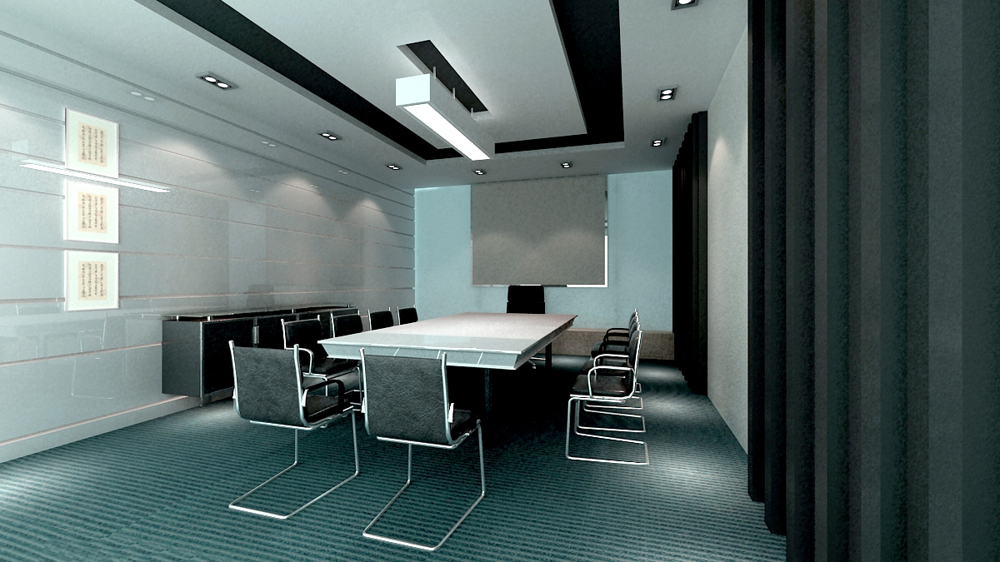

办公空间设计怎样才能有艺术感
第一、办公室装修设计秩序感
设计中的秩序是指形的反复、形的节奏、形的完整和简洁。办公室设计也正是运用这一基本理论来创造一种安静、平和与整洁的环境。秩序感是办公室设计的一个基本要素，要达到办公室设计中秩序的目的 ，所涉及的面也很广，如家具色彩的统一、平面布置的规整性、隔断高低尺寸与色彩材料的统一、天花板的平整性与不带花哨的装饰、合理的室内色调及人流的导向等。办公室装潢这些都与秩序密切相关，可以说在办公室设计中起着最为关键的作用。

第二、办公室装修设计名快感
让办公室给人一种明快感也是设计的基本要求。办公环境明快是指办公环境的色调干净明亮、灯光布置合理、有充足的光线等，这也是由办公室的功能要求决定的。办公室装潢在装饰中运用明快的色调可给人一种愉快的心情，给人一种洁净之感，同时明快的色调也可在白天增加室内的采光度。目前有许多设计师将明度较高的绿色引入了办公 室，这类设计往往有良好的视觉效果，从而营造一种春意，这也是一种明快感在室内设计中的创意手段。